UD 2 El lenguaje PHP. 6 Arrays
Duración Estimada: 8 sesiones, 16 horas
RA2 Escribe sentencias ejecutables por un servidor Web reconociendo y aplicando procedimientos de integración del código en lenguajes de marcas.
- A Se han reconocido los mecanismos de generación de páginas Web a partir de lenguajes de marcas con código embebido.
- B Se han identificado las principales tecnologías asociadas.
- C Se han utilizado etiquetas para la inclusión de código en el lenguaje de marcas.
- D Se ha reconocido la sintaxis del lenguaje de programación que se ha de utilizar.
- E Se han escrito sentencias simples y se han comprobado sus efectos en el documento resultante.
- F Se han utilizado directivas para modificar el comportamiento predeterminado.
- G Se han utilizado los distintos tipos de variables y operadores disponibles en el lenguaje.
- H Se han identificado los ámbitos de utilización de las variables.
RA3 Escribe bloques de sentencias embebidos en lenguajes de marcas, seleccionando y utilizando las estructuras de programación. 
- A Se han utilizado mecanismos dedecisión en la creación de bloques de sentencias.
- B Se han utilizado bucles y se ha verificado su funcionamiento.
- C Se han utilizado «arrays» para almacenar y recuperar conjuntos de datos.
- D Se han creado y utilizado funciones.
- E Se han utilizado formularios Web para interactuar con el usuario del navegador Web.
- F Se han empleado métodos para recuperar la información introducida en el formulario.
- G Se han añadido comentarios al código
OBJETIVOS Entrega 2
Estructuras de control, Creación de funciones y formularios
Introducción
En la clase anterior estudiamos bucles, condicionales y otras estructuras de control del flujo. Hoy veremos Funciones y arrays.
1 Arrays
RA3: Escribe bloques de sentencias embebidos en lenguajes de marcas, seleccionando y utilizando las estructuras de programación. C.Ev. C Se han utilizado «arrays» para almacenar y recuperar conjuntos de datos..
Un tipo de datos compuesto es aquel que te permite almacenar más de un valor. En PHP puedes utilizar dos tipos de datos compuestos: el array y el objeto .
- Los objetos los veremos más adelante; vamos a empezar con los arrays.
- Un array es un tipo de datos que nos permite almacenar varios valores.
- Cada miembro del array se almacena en una posición a la que se hace referencia utilizando un valor clave.
- Las claves pueden ser numéricas o asociativas.
- La clave puede ser un integer o un string.
- El valor puede ser de cualquier tipo.
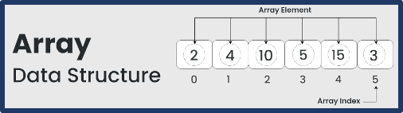
Para hacer referencia a los elementos almacenados en un array, tienes que utilizar el valor clave entre corchetes :
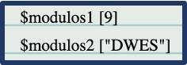
La función array permite crear un array con una sola línea de código
- Esta función recibe un conjunto de parámetros, y crea un array a partir de los valores que se le pasan.
- Si en los parámetros no se indica el valor de la clave, crea un array numérico (con base 0).
- Si no se le pasa ningún parámetro, crea un array vacío.
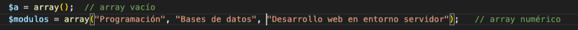
üíªPrograma21: Array
Programa21.php: Array(Ruta:dwes/UD2/Entrega2/)
Prueba a definir estos dos arrays y a mostrar un valor de cada uno
php
<?php
//Ejemplo Definición de array simple
$array1 = array(
"foo" => "bar",
"bar" => "foo",
);
// a partir de PHP 5.4
$array2 = [
"foo" => "bar",
"bar" => "foo",
];
//mostrar un valor de cada uno
?>
Info
Recuerda, la funciónprint_r , que nos muestra todo el contenido del array que le pasamos. Es muy útil para tareas de depuración.
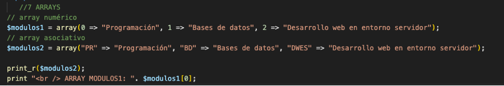
1.1 Arrays Multidimensionales
Los arrays anteriores son vectores, esto es, arrays unidimensionales.
- En PHP puedes crear también arrays de varias dimensiones almacenando otro array en cada uno de los elementos de un array.
- Para hacer referencia a los elementos almacenados en un array multidimensional, debes indicar las claves para cada una de las dimensiones

- En PHP no es necesario que indiques el tamaño del array antes de crearlo. Ni siquiera es necesario indicar que una variable concreta es de tipo array. Simplemente puedes comenzar a asignarle valores:
- Tampoco es necesario que especifiques el valor de la clave. Si la omites, el array se irá llenando a partir de la última clave numérica existente, o de la posición 0 si no existe ninguna:
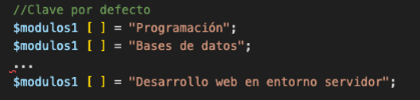
üíªPrograma21: -Array (ampliaci√≥n)
Programa21.php: Switch (Ruta:dwes/UD2/Entrega2/)
Crea el anterior array ciclos. Observa cómo se rellena poco a poco el siguiente array "modulos1" y amplía así el programa 21
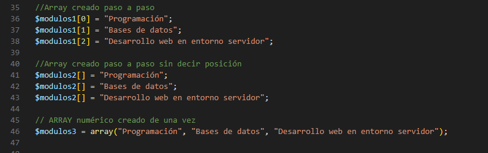
1.2 Recorrer Arrays (foreach)
Las cadenas de texto o strings se pueden tratar como arrays en los que se almacena una letra en cada posición, siendo 0 el índice correspondiente a la primera letra, 1 el de la segunda, etc.
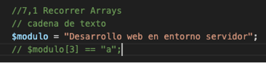
Para recorrer los elementos de un array, en PHP puedes usar un bucle específico: foreach . Utiliza una variable temporal para asignarle en cada iteración el valor de cada uno de los elementos del array. Puedes usarlo de dos formas.
Solo elementos
· Recorriendo sólo los elementos:
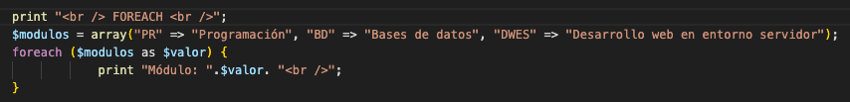
Clave - Valor
· O recorriendo sus valores clave y sus elementos de forma simultánea:
üíªPrograma22: Arrays multidimensionales
Programa23.php: Recorrer arrays (Ruta:dwes/UD2/Entrega2/)
Corrige y documenta el siguiente bloque de código
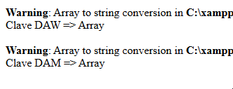
<?php
$ciclos = array(
"DAW" => array( "PR" => "Programación", "BD" => "Bases de datos", "DWES" => "Desarrollo web en entorno servidor"),
"DAM" => array( "PR" => "Programación", "BD" => "Bases de datos", "SGE" => "Sistemas de gestión empresarial")
);
//Array creado paso a paso
$modulos1[0] = "Programación";
$modulos1[1] = "Bases de datos";
$modulos1[2] = "Desarrollo web en entorno servidor";
// Mostrar elementos de array numérico
echo "<h3>Array numérico</h3>";
for ($i = 0; $i < count($modulos1); $i++) {
echo "Módulo $i: " . $modulos1[$i] . "<br>";
}
// Mostrar elementos de array asociativo
echo "<h3>Array asociativo</h3>";
foreach ($ciclos as $clave => $valor) {
echo "Clave $clave => $valor <br>";
}
?>
1.3 Funciones para recorrer Arrays (next, prev…)]
Pero en PHP también hay otra forma de recorrer los valores de un array. Cada array mantiene un puntero interno, que se puede utilizar con este fin. Utilizando funciones específicas, podemos avanzar, retroceder o inicializar el puntero , así como recuperar los valores del elemento (o de la pareja CLAVE / VALOR) al que apunta el puntero en cada momento.
Algunas de estas funciones son:
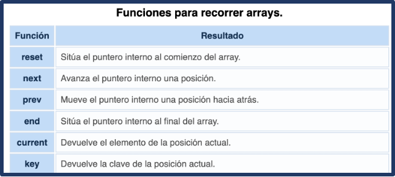
each
each ha sido eliminado desde la versión 8 de PHP;
Las funciones reset , next , prev y end , además de mover el puntero interno devuelven, al igual que current , el valor del nuevo elemento en que se posiciona. Si al mover el puntero te sales de los límites del array (por ejemplo, si ya estás en el último elemento y haces un next ), cualquiera de ellas devuelve false .
- Sin embargo, al comprobar este valor devuelto no serás capaz de distinguir si te has salido de los límites del array, o si estás en una posición válida del array que contiene el valor "false".
- La función key devuelve null si el puntero interno está fuera del array.
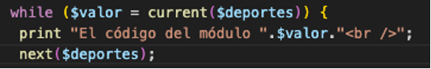
üíªPrograma23: Recorrer arrays
Programa23.php: Recorrer arrays (Ruta:dwes/UD2/Entrega2/)
Completa el programa con las funciones para recorrer arrays vistas.
<?php
// Definir el array con ciudades
$ciudades = array("Sevilla", "Granada", "Córdoba", "Málaga", "Cádiz");
/* Programa23: COPIA COLOCA LAS FUNCIONES DONDE CORRESPONDADN :
next($ciudades)
reset($ciudades)
prev($ciudades)
end($ciudades)
*/
// 1. "FUNCION ARRAY ???" → primer elemento
echo "Primer elemento con : " . "FUNCION ARRAY ???" . "<br>";
echo "Clave actual: " . key($ciudades) . "<br><br>";
// 2. "FUNCION ARRAY ???" → avanzar
echo "Siguiente Elemento con : " . "FUNCION ARRAY ???" . "<br>";
echo "Clave actual: " . key($ciudades) . "<br><br>";
// 3. "FUNCION ARRAY ???" → retroceder
echo "Elemento con : " . "FUNCION ARRAY ???" . "<br>";
echo "Clave actual: " . key($ciudades) . "<br><br>";
// 4. "FUNCION ARRAY ???" → último elemento
echo "Último elemento con : " . "FUNCION ARRAY ???" . "<br>";
echo "Clave actual: " . key($ciudades) . "<br><br>";
// 5. next() después del último → fuera del array
$valor = next($ciudades);
if ($valor === false && key($ciudades) === null) {
echo "El puntero está fuera del array (hemos pasado el final).<br>";
} else {
echo "Elemento actual: $valor<br>";
}
//Vamos a forzar a forzar que se muestre
echo "Elemento con next() fuera del array: " . next($ciudades) . "<br>";
echo "Clave actual: " . key($ciudades) . "<br><br>";
?>
1.4 Funciones datos compuestos (array, unset…)]()
Una vez definido un array puedes añadir nuevos elementos y modificar los ya existentes (utilizando el índice del elemento a modificar).
- También se pueden eliminar elementos de un array utilizando la función unset .
- En el caso de los arrays numéricos, eliminar un elemento significa que las claves del mismo ya no estarán consecutivas.
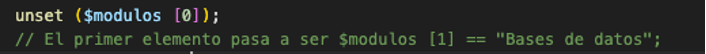
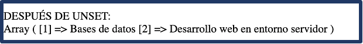
- La función array_values recibe un array como parámetro, y devuelve un nuevo array con los mismos elementos y con índices numéricos consecutivos con base 0.
- Para comprobar si una variable es de tipo array, utiliza la función is_array . Para obtener el número de elementos que contiene un array, tienes la función count .
- Si quieres buscar un elemento concreto dentro de un array, puedes utilizar la función in_array . Recibe como parámetros el elemento a buscar y la variable de tipo array en la que buscar, y devuelve true si encontró el elemento o false en caso contrario.
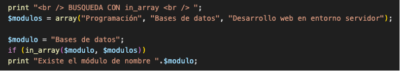
- Otra posibilidad es la función array_search , que recibe los mismos parámetros pero devuelve la clave correspondiente al elemento, o false si no lo encuentra.
- Y si lo que quieres buscar es una clave en un array, tienes la función array_key_exists , que devuelve true o false.
| Acción | Función / Forma de uso | Resultado |
|---|---|---|
| Añadir elemento | $array[] = "nuevo"; |
Agrega un elemento al final |
| Modificar elemento | $array[2] = "modificado"; |
Cambia el valor en la posición indicada |
| Eliminar elemento | unset($array[2]); |
Elimina el valor y deja un hueco en los índices |
| Reindexar array numérico | $array = array_values($array); |
Reorganiza claves en orden consecutivo desde 0 |
| Comprobar si es array | is_array($array) |
Devuelve trueo false |
| Contar elementos | count($array) |
Devuelve el número de elementos |
| Buscar valor | in_array("valor", $array) |
truesi existe,falsesi no |
| Buscar valor y obtener clave | array_search("valor", $array) |
Devuelve la clave o false |
| Buscar clave | array_key_exists("clave", $array) |
truesi la clave existe,falsesi no |
üíªPrograma24: Funciones arrays
Programa24.php: Funciones para arrays (Ruta:dwes/UD2/Entrega2/)
Prueba todas estas características en un programa PHP que contenga todas las funciones anteriores y documéntalo.
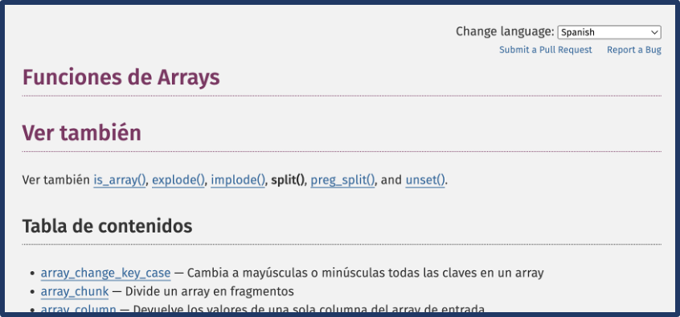
Actividad Entregable
Entregable
Tienes la info en la sección "Actividad entregable"